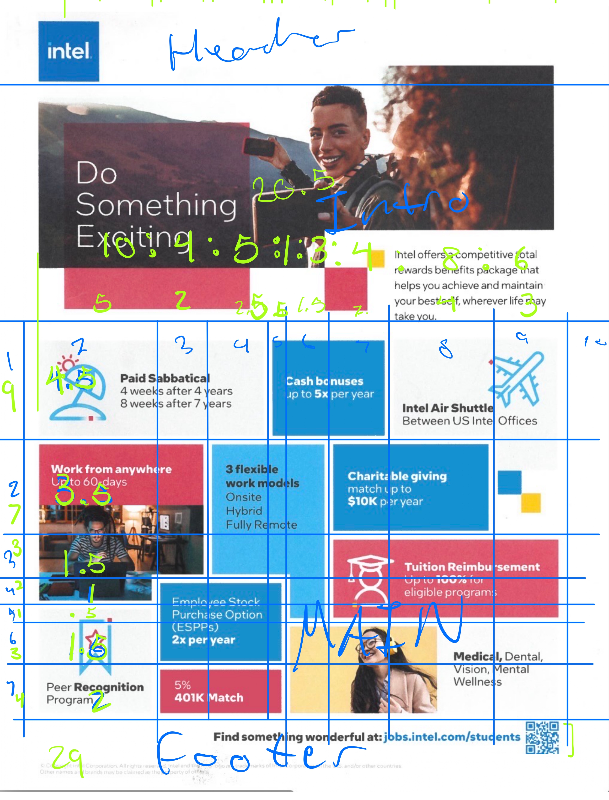

original image
 is link all sources of written content is on this page.
fonts are from google fonts: comfortaa light 300 and gabarito bold 700.
i drew all the image assests. favicon is from intel
Go to spec html
is link all sources of written content is on this page.
fonts are from google fonts: comfortaa light 300 and gabarito bold 700.
i drew all the image assests. favicon is from intel
Go to spec html
- The goal of the page is as an advertisement for both the phase 1 and phase 2 since in phase 1 it is an ad for intel
to encourage people to apply for jobs at their company. And in phase 2 it would be an ad for a made upi product. For
phase 2 the intended audience would probably be the average person so it would aim to have mass appeal and make the product
seem like something that everyone should have.
- The first thing that I had to tackle was how I was going to seperate the page into its main components

- I was going to go with this initially but then I realized that it would be too many grid lines which would make it much more
difficult to manage the lines and all the boxes that are in the layout

- Deciding to seperate the page into three main sections, I created an overall grid which contained the three main parts of the
page and then seperated the main content area as a grid into a 7 by 9 grid and used the divs that I made in my html to create
boxes in the grid. The numbers in green were used for calculating the fractional size that I wanted to have for the grid boxes.
I used the image below to box out the areas that I needed for the grid.
- To get the polygon shape that some of the boxes have I had to create addition divs that used hte same color as the irregularly
shaped boxes then then apply a nengative top margin to them to make it look like they connected.
-
my sketch for the responsive layout of the page.